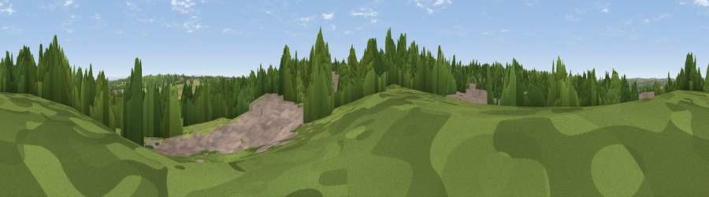

Windmill Hill
#35455 in England · top 77% of its area beats it · near Preston BrookWhere it is
The exact computed spot (SJ 55293 82210). Click the marker for map links.
The view, rendered

A 360° render of this exact spot computed from the terrain model, tree cover and land cover — summer colours, afternoon light, calibrated against photographs of famous viewpoints. Real trees, hedges and buildings will differ in detail.
The panorama
Grey silhouette: terrain skyline in each direction (720 bearings, Earth curvature and refraction included). Dashed green: skyline with trees (+15 m) and buildings (+8 m) as obstacles. Blue strip: how far the ground is visible on each bearing.
Where the view opens
Wedge length = distance to the farthest visible ground on that bearing (vegetation-aware). Rings at 10, 25 and 50 km.
What fills the view
47% woodland · 25% built-up · 21% grassland · 6% cropland ·
Angular shares of the visible panorama (visual magnitude), not map area. Landscape diversity 0.55 (0–1 Shannon).
Key numbers
More beautiful places nearby
The staircase of upgrades: each row has a higher view potential than everything closer. Driving times are estimates from straight-line distance, calibrated against real road routing — check an actual route before setting out.
| Place | Direction | Drive | Score |
|---|---|---|---|
| Halton Hill | W · 2 km | ~4 min | 69.0 |
| Frodsham Hill | SSW · 6 km | ~13 min | 73.4 |
| Beacon Hill | SSW · 6 km | ~14 min | 77.3 |
| Viewpoint near Harthill | S · 27 km | ~44 min | 80.5 |
| White Brow | NNE · 32 km | ~50 min | 82.9 |
| Viewpoint near Halfway House | SSW · 73 km | ~97 min | 83.3 |
| Viewpoint near Little Wenlock | S · 74 km | ~98 min | 84.2 |
| The Wrekin | S · 74 km | ~98 min | 85.0 |
53.33490, -2.67282 · source: osm peak · position refined by local search. Computed location — check access rights before visiting.